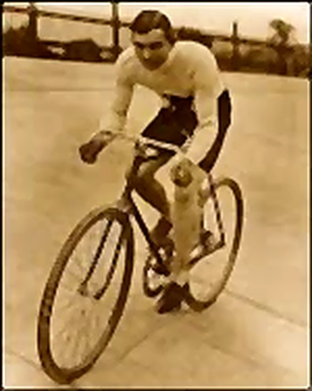

Dopping
Termo “doping” deriva da palavra inglesa dope, utilizada historicamente para se referir a substâncias estimulantes. Atualmente, o doping é fiscalizado por organizações esportivas internacionais, como a Agência Mundial Antidoping (WADA), responsável pela elaboração da lista de substâncias proibidas e pela regulamentação dos exames antidoping em competições e treinamentos.
Principais vantagens do doping são
Desenvolvimento muscular acelerado : O uso de esteroides anabolizantes e hormônios do crescimento (como o GH) potencializa a síntese de proteínas
Ganho de força física : Permite explosões musculares maiores, ideal para halterofilistas ou velocistas.
Melhora da resistência e do fôlego
Maior oxigenação dos tecidos : O doping sanguíneo e o hormônio eritropoetina (EPO) elevam o número de glóbulos vermelhos no sangue, Resistência aeróbica extrema : Retardo o cansaço em modalidades de longa duração, como ciclismo e maratonas. no entanto os problemas que o doping causa são maiores e preocupantes como por exemplo Problemas no sistema nervoso: as drogas causam dependência química, psicose, depressão, ansiedade e perda cognitiva. Danos ao coração: as substâncias estimulantes provocam arritmias cardíacas, morte súbita e infarto. Problemas no fígado: os anabolizantes são causadores de hepatite tóxica, câncer hepático e cirrose. Danos aos rins: desidratação e insuficiência renal são sinais do uso de diuréticos.
Tipos de Doping
Passe o mouse (ou toque, no celular) nos frascos abaixo para ver o que cada tipo de doping faz.
Estimulantes
Aumentam o estado de alerta e reduzem a sensação de cansaço.
Ex.: anfetaminas, efedrina (em certas doses).
Esteroides Anabolizantes
Aumentam a massa muscular, a força e aceleram a recuperação.
Ex.: testosterona (uso proibido), nandrolona.
Hormônios e Fatores de Crescimento
Melhoram a recuperação, o crescimento muscular ou a produção de glóbulos vermelhos.
Ex.: EPO (eritropoetina), hormônio do crescimento (GH).
Diuréticos e Agentes Mascarantes
Ajudam a perder peso rapidamente ou dificultam a detecção de outras substâncias nos exames.
Narcóticos (Opioides)
Reduzem a dor, permitindo competir mesmo lesionado.
Canabinoides
Substâncias derivadas da cannabis que podem ser proibidas em competições, dependendo das regras.
Betabloqueadores
Diminuem tremores e a frequência cardíaca. Proibidos apenas em alguns esportes, como tiro esportivo e arco e flecha.
Doping Sanguíneo
Aumenta a quantidade de glóbulos vermelhos para melhorar o transporte de oxigênio.
Feito por transfusão de sangue ou uso de EPO.
Doping Genético
Envolve alterações genéticas para melhorar o desempenho físico. É proibido e ainda raro.
Primeiro caso de Doping registrado
O primeiro caso de doping da história está ligado ao ciclista galês Arthur Linton, no final do século XIX. Naquela época, ainda não existiam regras antidoping, e muitos atletas utilizavam substâncias estimulantes para aumentar a resistência física durante provas longas e cansativas. Entre as substâncias usadas estavam cafeína em altas doses, álcool, éter e estricnina.
Arthur Linton participou de competições extremamente desgastantes e treinava com métodos pesados. Seu treinador, Choppy Warburton, era conhecido por fornecer "misturas estimulantes" aos atletas. Após anos de esforço intenso, Linton morreu jovem, aos 27 anos, e historiadores acreditam que o uso dessas substâncias pode ter contribuído para sua morte.
Como ainda não existiam exames laboratoriais, o caso não foi detectado da maneira moderna. A relação com o doping foi descoberta posteriormente por meio de relatos históricos, testemunhos e documentos da época que citavam o uso de estimulantes no ciclismo.
Décadas depois, surgiram os primeiros exames antidoping, que evoluíram para os atuais testes de sangue e urina utilizados pela World Anti-Doping Agency para garantir a justiça e a segurança no esporte.

Biografia de Arthur Vincent Linton
Arthur Vincent Linton (28 de novembro de 1868 – 23 de julho de 1896) foi um ciclista profissional britânico de estrada e pista, considerado um dos maiores fenômenos do esporte no final do século XIX. Nascido na Inglaterra, ele cresceu no País de Gales e construiu uma carreira meteórica na Europa, ficando célebre pela sua vitória na clássica corrida Bordéus-Paris.